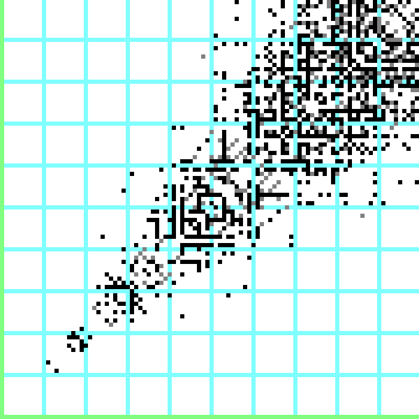
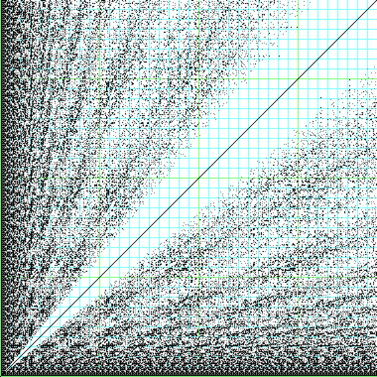

These are the dimensions of rectangles that are not minimally dissected into squares with the naive algorithm of finding the largest square that can fit and then iterating. The colored blocks indicate the various categories of solutions. The light and dark teal lines are at multiples of 10 and 100.
These are the rectangles whose dissections cannot be split into smaller sets of squares. Gray points are rectangles that are multiples of smaller rectangles.
These are the rectangles that need an algorithm other than simply removing the largest squares. The graph has a repetitive structure because adding a square to the side of a non-trivial rectangle produces another non-trivial rectangle.
These are the rectangles for which the trivial solution is the correct one. Note the visible lines at 1:1 (the squares) and 2:1.
